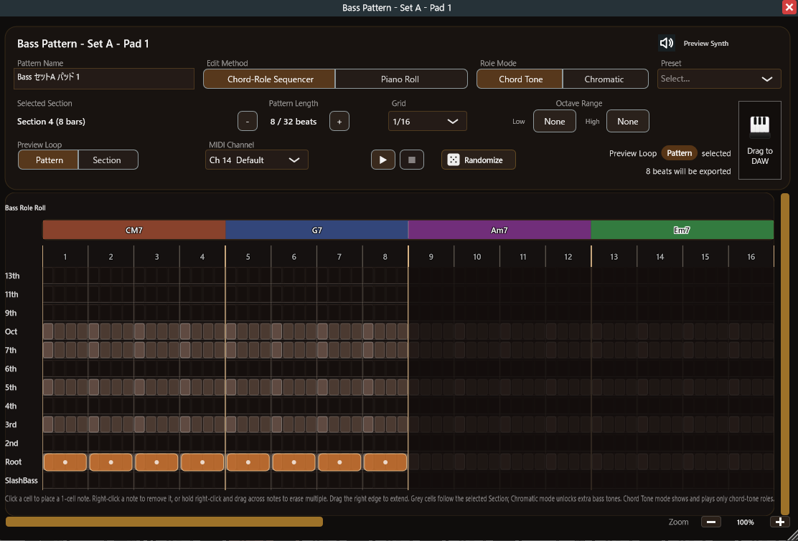
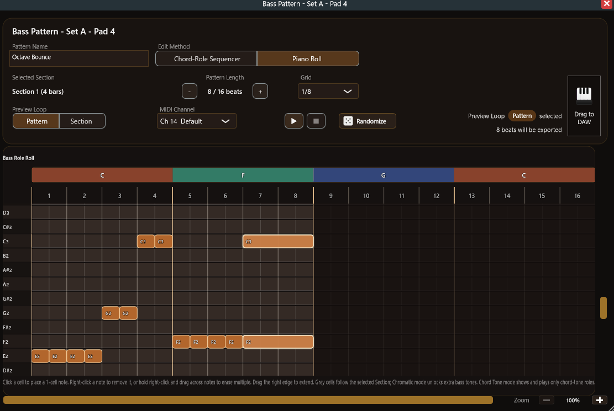
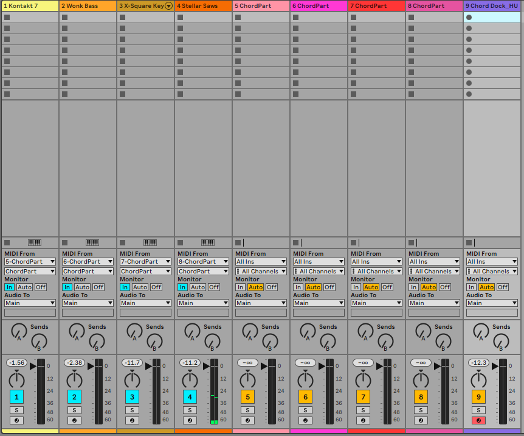

マニュアル情報
DAW 上でのコード進行編集、セクション管理、アルペジオ / ベースライン生成、リハモ、アレンジャーモードによる伴奏演奏、付属レシーバー ChordPart によるパート別 MIDI 出力までをまとめた v2.0 対応マニュアルです。
| 項目 | 内容 |
|---|---|
| 製品 | Chord Dock（Lite / Extended / Performance） |
| 同梱プラグイン | Chord Dock 本体 / ChordPart（レシーバー） |
| 本マニュアルの対象フォーマット | VST3 / AAX / AU（ChordPart は VST3 のみ） |
| 対象バージョン | v2.0.1 |
| マニュアルバージョン | v2.0 |
| 最終更新日 | 2026-07-14 |
1. はじめに
Chord Dock は、DAW 上でコード進行を作成・編集・試聴・変形・MIDI 出力し、さらにそのコード進行を土台に伴奏を演奏するためのプラグインです。
バージョン 2.0 では、従来のコード編集系の機能に加えて、次の要素が追加されました。
- アレンジャーモード: セクションごとに Drums / Bass / Arp / Chord Pad の伴奏パターンを作成し、パッドで演奏・予約しながら曲を進められる Performance エディションの中核機能
- パフォーマンスページ / Song ページ: 4 パートを俯瞰して演奏する画面と、パターンを曲順に並べて確認する画面
- ChordPart（付属レシーバープラグイン）: パート別の MIDI を DAW の別トラックへ直接届ける小型プラグイン。プラグイン出力 MIDI をチャンネルで振り分けられない DAW（Ableton Live など）でも、パートごとに好きな音源を鳴らせます
従来からの主な機能は次のとおりです。
- タイムライン上でのコード進行編集
- セクション管理とフォーカス編集
- コードパレット上のコード編集
- アルペジオ / ベースライン生成
- リハモ候補の比較、プレビュー、適用
- 生成ノートのドラッグエクスポート
このマニュアルは、次のユーザーを想定しています。
- Windows / macOS の DAW ユーザー
- コード先行で作曲 / 編曲したい方
- MIDI クリップを中心に制作する方
- コード進行から伴奏を素早く組み立て、パッドで操作したい方
2. 対応環境
2.1 対応 OS
- Windows 10 以降（64-bit）
- macOS 10.15 以降（64-bit）
32-bit OS には対応していません。
2.2 対応プラグイン形式
- Windows: VST3 / AAX
- macOS: VST3 / AU / AAX
付属の ChordPart は、Windows / macOS とも VST3 のみです（Standalone はありません）。実際の同梱形式は配布パッケージに従ってください。
2.3 対応ホスト / DAW の目安
一般的な VST3 / AU / AAX 対応 DAW を想定しています。例:
- Cubase / Nuendo
- Studio One
- Ableton Live
- Bitwig Studio
- Logic Pro
- Pro Tools
- Reaper
DAW 固有の仕様により、一部挙動が異なる場合があります。ChordPart を使ったパート別ルーティングは、本体と ChordPart を同じ DAW プロジェクト内で使うことが前提です（第 17 章）。
3. インストール
3.1 配布形式
v2.0.1 の配布ファイル:
- Windows:
Chord_Dock_2.0.1_windows.zip。ユーザーマニュアル等を同梱した ZIP で、プラグイン本体としてChord Dock.vst3とChordPart.vst3の 2 つが含まれます - macOS:
Chord_Dock_2.0.1_mac.pkg。本体と ChordPart の両方をインストールするパッケージです
Windows 版では、インストーラーではなく ZIP 配布を前提とします。ZIP にはマニュアルや付属案内が含まれる場合があります。
3.2 インストール前の注意
- すべての DAW を終了してから配置またはインストールを行ってください。
- Windows の ZIP 配布では、
.vst3を手動で VST3 フォルダへコピーします。Chord Dock.vst3とChordPart.vst3の両方をコピーしてください。 - 既に Chord Dock が入っている場合は、通常は上書き更新になります。
- 本体と ChordPart は必ず同じバージョンのセットで更新してください（バージョンが異なると ChordPart 側が安全のため停止します。第 17 章）。
- 管理者権限が必要になることがあります。
3.3 代表的なインストール先
- Windows VST3:
C:\Program Files\Common Files\VST3\ - Windows AAX:
C:\Program Files\Common Files\Avid\Audio\Plug-Ins\ - macOS VST3:
/Library/Audio/Plug-Ins/VST3/ - macOS AU:
/Library/Audio/Plug-Ins/Components/ - macOS AAX:
/Library/Application Support/Avid/Audio/Plug-Ins/
Windows の ZIP 配布を使う場合は、Chord Dock.vst3 と ChordPart.vst3 を C:\Program Files\Common Files\VST3\ へ配置してください。
3.4 アンインストール方針
- Windows の ZIP 配布では、配置した
.vst3（本体と ChordPart の両方）を削除してアンインストールします。 - macOS では専用アンインストーラーがあればそれを使い、なければプラグインファイルを手動削除します。
4. DAW 側の初期設定
4.1 プラグインスキャン
DAW に Chord Dock が出ない場合は、次を確認してください。
- インストールが正常終了しているか
- Windows では
.vst3を標準フォルダへ正しくコピーしたか - DAW 側で再スキャンしたか
スキャン後は、Chord Dock と ChordPart の 2 つが DAW のプラグイン一覧に表示されます。
4.2 基本的なルーティング
Chord Dock は主に次のどちらかの使い方を想定しています。
- MIDI を別音源へ送る生成プラグインとして使う
- MIDI を作って書き出す作業台として使う
基本構成:
- MIDI トラックまたはインストゥルメントトラックに Chord Dock を挿す
- 別トラックにソフト音源を挿す
- DAW 側で MIDI をルーティングする
アレンジャーモードのパート別出力（Drums / Bass / Arp / Chord Pad）を複数の音源へ配る場合は、次の 2 通りがあります。
- DAW の MIDI ルーティングで、Chord Dock の出力をチャンネル別に振り分ける（チャンネルフィルタを持つ DAW 向け）
- 付属の ChordPart を使って、パートごとに MIDI トラックの入口を作る（Ableton Live などチャンネル分離ができない DAW 向け。第 17 章）
4.3 プロジェクト保存
通常は、Chord Dock の状態は DAW プロジェクトと一緒に保存 / 復元されます。アレンジャーモードのパターンやパッド割当、ChordPart の設定も同様です。
5. メイン画面の全体像
メイン画面は、主に次のエリアで構成されています。
- トップツールバー
- タイムライン
- 中段パネル
- 右サイドパネル
- コードパレット
- 鍵盤バー
- 五度圏、アルペジオ編集、リハモ編集などの補助ウィンドウ
アレンジャーモードを有効にすると、画面下段はアレンジャー専用の画面（セットアップ / パフォーマンス / Song の 3 ページ）に切り替わります（第 15 章・第 16 章）。
6. トップツールバー

トップツールバーには、Chord Dock 全体に関わる操作があります。
主な項目:
- Undo / Redo
- 拍子変更
- センター移動
- Progression メニュー
- MIDI エクスポート
- Degree View
- Timeline Only
- セクション表示切替
- 内部オーディオ切替
- Settings / ライセンス
ビルドによって、配置や文言が少し異なることがあります。
7. タイムライン編集
7.1 コードイベント

タイムラインは、コード進行を時間軸に沿って編集する中心エリアです。
- コードブロックを配置する
- ドラッグで移動する
- 端をドラッグして長さを変える
- クリック位置をカーソルにする
- スナップ設定に従って配置する
7.2 拍子変更
ルーラーから拍子変更を配置できます。変拍子情報は、アルペジオ、リハモ、アレンジャーモードの各画面にも反映されます。
7.3 タイムライン上のコード編集

タイムライン上のコードイベントは、右クリックメニューから直接編集できます。
現行の編集項目には、次が含まれます。
- コードタイプ
- 転回形
- オクターブ
- オンコード
- コード修飾
- テンション
コード修飾 サブメニューでは、次を扱います。
omitsus9thb5aug6th
これらはコードパレットと同じ計算ロジックを共有しますが、保存先の状態は独立しています。
8. セクション
8.1 セクションとは
セクションは、複数のコードイベントを Verse / Chorus などのまとまりとして扱うための機能です。
8.2 セクションの作成

- タイムラインで複数のコードを選択する
- セクション作成コマンドを実行する
- セクション名を入力して確定する
8.3 通常モード

通常モードでは:
- セクションは 1 つのまとまりとして扱われる
- 移動や複製ができる
- 名前変更、色変更、解除ができる
- 中身を参照用に表示できる
8.4 フォーカス編集モード


セクションをダブルクリックすると、フォーカス編集モードに入ります。
このモードでは:
- 選択したセクションだけを編集できる
- 外側は暗く表示される
- Esc で終了できる
8.5 セクションと演奏機能
アルペジオ、リハモ、アレンジャーモードは、いずれも「選択中のセクション」を単位として動作します。
アレンジャーモードで演奏に使うセクションには、追加の条件があります。
- セクションが小節頭から始まり、小節の終端（次の小節頭）で終わること
- 長さが 1 小節以上あること
条件を満たさないセクションは、アレンジャーモードでは「登録はされるが使用不可」として扱われ、セクションランチャー上でグレー表示になります。タイムラインでセクションの開始位置と終了位置を小節境界に揃えると使えるようになります。
9. 中段パネル

中段パネルには、次のようなタイムライン関連の操作があります。
- 挿入長さ
- snap / grid
- センター移動
- 言語切替
- アルペジオ / リハモ / アレンジャーの各モードへの入口
アルペジオモードやリハモモードに入ると、中段パネルの一部はそのモード専用 UI に切り替わります。
アレンジャーモード中は、中段パネルが演奏用の帯に切り替わり、次のような項目が並びます（詳細は第 15 章・第 16 章）。
アレンジャー: アレンジャーモードの ON / OFF- ページ切替:
Perform/Song MIDIチップ: トリガー入力チャンネル（MIDI 入力）同期モードチップ: ホスト / プラグインLaunchチップ: Launch Quantize自動進行チップ: Auto（セクション / パッドの自動進行）Part送信チップ: ChordPart への送信（第 17 章）現在/次回カード: 再生中セクションと予約セクション演奏設定メニュー: 上記のまとめ窓口戻る: アレンジャーモードから通常表示へ
10. コードパレット
コードパレットは、現在の Key / Scale に基づいてコードバブルを並べるエリアです。
主な操作:
- シングルクリック: 試聴
- ダブルクリック: カーソル位置へ挿入
- 右クリック: コード編集メニュー
コードバブルでは、次のような編集ができます。
- コードタイプ変更
- 転回形
- オクターブ
- オンコード
- omit / sus / add9・9th 関連 / b5 / aug / 6th
- テンション
これらの設定は、そのバブルから新規挿入されるコードへ反映されます。
11. 右サイドパネル


右サイドパネルには、全体の和声設定があります。
主な項目:
- Key
- Scale
- トライアド / テトラッド寄りの表示や振る舞い
- グローバルオクターブ
- プリセット進行
- 色 / テーマ設定
Key や Scale を変えると、コードパレットや五度圏表示も更新されます。
12. 五度圏

対象エディション: Extended（第 19 章参照）
五度圏ウィンドウは、近親和音や調性感を視覚的に確認するための補助画面です。
主な使い方:
- 関連するコードを見渡す
- 調の近さを把握する
- 必要に応じてコードパレット側へ反映する
タイムラインへの直接配置面ではありません。
13. アルペジオ / ベースライン
13.1 概要


対象エディション: Extended / Performance（第 19 章参照）
アルペジオ機能は、選択セクションのコード進行からノート列を生成するモードです。
モードは 2 種類あります。
ArpeggioBassline
どちらも同じ生成基盤を使いますが、音域テーブル、プリセット、見せ方が異なります。
13.2 セクション制約
- 必ず選択セクションを対象にする
- 対象はセクション全体
- 16 小節を超えるセクションは読み込めない
13.3 主なパラメータ
現行の主パラメータ:
Range/Spread/Density/Grid/Notes/Tension/Order/Syncopation/Rest/Style
13.4 Range と Spread
Range は基準音域を選ぶ機能です。Spread Up / Down は、その基準帯域から上下へ許容音域を広げます。
Bassline では低域側の音域テーブルが通常 Arpeggio と異なります。
13.5 Notes と Tension
Notes ポップアップでは、次のような音の役割を選べます。
- Root / 2nd / 3rd / 4th / 5th / 6th / 7th / 9th / Oct
Tension モード:
Off/On/Only
13.6 Order
Arpeggio モードでは、次を選べます。
Up/Down/Up-Down/Random
Random も完全ランダムではなく、同一入力なら同一結果になります。
Bassline では、メイン UI に Order は出しません。
13.7 Syncopation
Syncopation はヒューマナイズではなく、マスクベースの食い機能です。
設定できるもの:
- ON / OFF
- bar mask / beat mask / sub-step mask
- 方向
Ahead / Behind
Ahead は前倒し、Behind は開始位置を動かさず長さを後ろへ伸ばします。
13.8 Rest
Rest もマスクベースです。指定した小節 / 拍 / サブステップの位置ではノートを生成しません。
13.9 Style
Arpeggio の現行スタイル:
- Default / Pulse 16 / Up-Down / Wide / Tight / Random Spark / Custom
Bassline の現行スタイル:
- Default / Root 1/4 / Octave Pulse / Walking / Syncopated / Drone / Custom
現在のパラメータがプリセットと一致しない場合、表示は Custom になります。
13.10 ノート編集ウィンドウ

アルペジオには、ピアノロール上でノートを直接編集するウィンドウがあります。
できること:
- ノート位置と長さの編集
- ズームとスクロール
- プレビュー再生
- 編集結果の保存
- 再生成へのリセット
パラメータ変更やスタイル変更を行うと、編集済みノートはクリアされ、再生成結果へ戻ります。
13.11 ドラッグエクスポート
生成されたアルペジオ / ベースラインノートは、そのまま MIDI として DAW へドラッグできます。
14. リハモ
14.1 概要

対象エディション: Extended（第 19 章参照）
リハモ機能は、選択セクションのコード進行を、候補を比較しながら再和声化するためのモードです。
14.2 セクション制約
- 選択セクションを対象にする
- セクション自体は 16 小節以内
- セクション内で選べるリハモ範囲は最大 8 小節
- 実際の適用対象コード数は最大 8
14.3 基本フロー
- セクションを選ぶ
- 範囲を決める
Applied Codesを決めるCore / Enrich / Rebuildを選ぶ- 候補をプレビューする
- 必要ならコードをロックする
Show Originalで比較するApplyで確定する
14.4 Range と Applied Codes
- 範囲は 2 ハンドルスライダーで選ぶ
- リハモ範囲は最大 8 小節
Applied Codesは、その範囲に入っているコードの先頭 N 個Applied Codesの最大値は 8
14.5 モード
Core: 保守的。コード単位の候補、同期生成。
Enrich: 色味や展開を加える。Chord Unit と Progression Unit を持つ。
Rebuild: より大胆な再設計。進行単位中心。T/S/D Fidelity は内部的に無効固定。
14.6 Show Original
Show Original は比較表示用トグルです。
- ON: 元進行を表示し、元進行ベースのノートをプレビューする
- OFF: 現在のリハモプレビューへ戻る
- ON のまま Apply すると、プレビューを破棄して元進行を維持する
14.7 候補プレビュー
候補はまずプレビュー用データへ適用され、いきなりタイムライン本体を書き換えません。
そのため:
- 元のタイムラインは即時上書きされない
- プレビューに実変更があるときだけ
Applyが有効になる - 分割候補では 1 つのコードから 2 イベントが作られることがある
Applyで確定するまでは、次の候補生成も元の対象進行を基準に行われる- まだ未確定のプレビュー結果を土台にして、さらに別のリハモ候補へ連鎖させることはない
14.8 コードロック
リハモでは、対象コードを persistent ID 単位でロックできます。
ロックしたコードは:
- 候補再生成時に保持される
- 現在のプレビュー状態を維持したまま扱われる
14.9 編集ウィンドウ


リハモ編集ウィンドウでは、次のような詳細操作ができます。
- Key / Scale 表示
- play / stop、save / reset
Show Original、Core / Enrich / Rebuild、Generation Unit- loop、
T/S/D Fidelity、各種フィルタ、intent ノブ - 候補説明カード、seed 説明、ミニタイムライン編集
再生まわりの現在仕様:
- DAW 再生開始時は、リハモのプレビュー再生音は停止する
- ただし、まだ
Applyしていないリハモ結果は編集ウィンドウ上に保持される - DAW を再生しただけで、未確定のリハモプレビューが元進行へ戻ることはない
14.10 Apply と Undo
リハモの適用では:
- 確認ダイアログを出す
- 選択範囲内だけを書き換える
- 必要なら既存イベントを置換し、分割イベントを追加する
- ノートを再生成する
- Undo 上では
Reharmo Applyとして記録する
15. アレンジャーモード：セットアップとパターン編集
15.1 概要

対象エディション: Performance（第 19 章参照）
アレンジャーモードは、タイムライン上のコード進行を「演奏できる伴奏」に変える機能です。セクションごとに 4 パート（Drums / Bass / Arp / Chord Pad）の伴奏パターンを作り、パッドで呼び出しながら曲を進められます。
パターン生成の仕組み
アレンジャーモードは基本的に、ユーザーが自分で伴奏パターンを作成・編集するための仕組みです。
アレンジャーモードは、AI 生成、クラウド生成、または完全なランダム再生を行う機能ではありません。パターンは、パッドに保存される編集可能なリズムと音楽的役割のテンプレートです。プリセットやランダム生成コマンドは開始点を作るための機能で、その後は通常のパターンとして自由に編集できます。
Chord Dock が Bass / Arp / Chord Pad をプレビュー、演奏、または MIDI 書き出しするときは、選択中セクションのコード進行を読み取り、パターン内のタイミングとコードに対する役割を実際の MIDI ノートへ変換します。同じパターンを別のコード進行で使った場合も、リズムと役割は保たれ、実際に鳴る音程だけが新しいコードに追従します。
全体のワークフロー:
- タイムラインでコード進行を作り、セクションにまとめる（第 8 章）
- アレンジャーモードを ON にする
- パートごとにパターンを作成し、パッドへ割り当てる（本章）
- セクションランチャーやパッドで演奏する。必要に応じて Song ページで曲順に並べる（第 16 章）
- できあがったパターンは MIDI としてドラッグして DAW へ書き出せる
15.2 対象エディションとデモ版
- アレンジャーモードは Performance エディションの機能です。
- Lite / Extended など Performance を持たないエディションでも、Arranger Mode Demo として基本操作を試せます（制限あり。下記）。
- Performance / Full Bundle では制限が解除され、全パッドと MIDI 書き出しが使えます。
- 演奏にはセクションが必要です。セクションは小節頭から始まり、小節の終端で終わる必要があります（第 8.5 節）。
- 条件を満たさないセクションを選ぶと、開始位置と終了位置を小節境界に揃えるよう案内が表示されます。
デモ版で試せること
- アレンジャーモードを開き、セットアップ / パフォーマンス / Song の各ページを操作する
- セクションの確認・選択、セクションランチャーの操作
- 各パートの Pad 1〜3 でパターンを作成・編集・プレビューし、開始点としてのランダム生成も試せる
- Pad 1〜3 を使った Song ページの配置・再生
デモ版の制限
- 実再生時間は累積 90 秒までです。アレンジャーが実際に演奏・出力している時間だけがカウントされ、画面を開いているだけ・編集しているだけの時間は消費しません。
- 各パートで使えるのは Pad 1〜Pad 3 までです。Pad 4〜Pad 8 は表示されますが使用できません（不具合ではなく、デモ版の仕様です）。
- アレンジャー由来の MIDI 書き出し / ドラッグエクスポートは使用できません。
- 残り時間が少なくなると警告が表示され（例:
Arranger Demo - 残り 00:15）、0 になるとアレンジャーの再生・トリガー・編集・MIDI 出力がロックされます。
デモ残り時間について
- デモ残り時間はプロジェクトに保存されません。DAW プロジェクトを開き直すか、プラグインを挿し直すと 90 秒に戻ります。
- Pad 4〜8 に既存データがあっても、デモ制限で削除されることはありません。Performance / Full Bundle で開けば全パッドが使えます。
15.3 アレンジャーモードの開始と 3 つのページ
中段パネルの アレンジャー ボタンでアレンジャーモードに入ります。画面下段がアレンジャー専用画面に切り替わり、次の 3 ページを行き来できます。
- セットアップページ: パートとパッドの管理、パターン編集の入口。アレンジャー ON 直後はこのページです。
- パフォーマンスページ:
Performで開く演奏用画面。4 パート×8 パッドを一覧します（第 16.8 節）。 - Song ページ:
Songで開く曲構成画面。パターンを曲順に配置します（第 16.9 節）。
各ページからは 戻る ボタン、または Esc キーで戻れます。アレンジャーモード中は、PC キーボードの数字キー 1〜8 がセクションランチャーに割り当てられます（第 16.1 節）。
15.4 パートと MIDI チャンネル
アレンジャーモードは、次の 4 パートで構成されます。
Drums: 既定 Ch10。固定のドラムレーンを MIDI ノートへ割り当てて使います。Bass: 既定 Ch14。編集方式に応じて、コード相対の役割パターン、または絶対音高の MIDI Roll を使えます。Arp: 既定 Ch15。分散フレーズ向けのコードトーン役割パターンを使います。Chord Pad: 既定 Ch16。白玉やリズム弾き向けのコードトーン役割パターンを使います。
各パートの MIDI チャンネルは、パターンエディタ内の MIDIチャンネル から変更できます。プレビュー、ドラッグエクスポート、ライブ再生はすべてこの設定に従います。
パート別に別々の音源を鳴らす方法は 2 通りあります。
- DAW の MIDI ルーティングでチャンネル別に振り分ける
- 付属の ChordPart を使う（第 17 章）。この場合、パート同士のチャンネルが重複しないようにしてください
15.5 パッドとパターンセット
各パートは 8 個のパッドを持ちます。Pad 1〜7 が主要パッド、Pad 8 は補助パッド扱いです。
さらにパートごとに パターンセット（セットA / セットB）を持ち、パッド 8 個×2 セットを切り替えて使えます。
選択中パッドの情報はパッドインスペクターに表示され、次の操作ができます。
編集: パターンエディタを別ウィンドウで開く（空パッドの場合は新規作成）コピー/ペースト: パッド間でパターンを複製する（上書き確認あり）クリア: パッドの割当を解除する演奏停止: そのパートの演奏を止めるスタンバイにする: 音を出さずにパッドを待機状態にする
パッドの右クリックメニューからも同じ操作ができます。
スタンバイ Pad 1 ボタンは、パターンが割り当てられている全パートの Pad 1 をまとめて無音で待機させます。DAW を再生した瞬間から伴奏を鳴らしたいときは、再生前にこれを押しておきます。
デモ版では、各パートで使えるのは Pad 1〜3 までです（第 15.2 節）。Pad 4〜8 は表示されますが選択できません。
15.6 パターンエディタの共通操作
パターン編集は、パートごとの専用エディタを別ウィンドウで開いて行います。表示とプレビューは「選択中セクション」を基準にします。
共通の設定・操作:
パターン名: パッドに表示される名前プリセット: スタイルの雛形を呼び出す（第 15.10 節）パターン長: 拍数で指定。セクションより短いパターンはループして追従しますグリッド: スナップ / ガイド解像度（1/4、1/8、1/8T、1/16、1/16T、1/32）。ノートの実長は保持されますズーム/ 横スクロール: 長いパターンも潰さずに編集できます- Play / Stop: エディタ内プレビュー再生
プレビューループ: ループ範囲を「セクション」か「パターン」から選択MIDIチャンネル: このパートの出力チャンネル（第 15.4 節）
グリッドセルでの基本編集:
- クリックでノートを配置、左ドラッグで連続配置
- 右クリックで削除、右ドラッグで連続削除
- ノート右端のドラッグで長さを延長
- 空セル = 休符、横方向の継続 = 長いノート（専用の休符 / タイ行はありません）
上段にはセクションのコードリボンと小節 / 拍ガイドが表示され、拍子変更にも追従します。
15.7 Drums エディタ

Drums はレーン式のステップエディタです。キック / スネアなどの打楽器レーンを縦に並べ、レーン×グリッドでパターンを組みます。
- 各レーンは MIDI ノート（GM 配列準拠の初期値）に対応します
- レーン名をクリックすると、そのレーンの MIDI ノート割り当てを変更できます
初期化でノート割り当てを既定値へ戻せます
ドラム音源のマッピングが GM と異なる場合は、レーン割り当てを音源側に合わせて調整してください。
15.8 Bass エディタ


Bass エディタは、編集方式（パターン種別）を 2 つから選べます。切り替えるとパターン内容は作り直しになるため、確認ダイアログが表示されます。
Chord-Role Sequencer
- 縦軸が「コードに対する役割」のレーンになったシーケンサーです。下から Root、3rd、5th … Octave の順に並び、11th / 13th / SlashBass などの行も扱えます
- 同じパターンを別のコード進行のセクションで使っても、役割どおりの音に読み替えられて鳴ります
Role Mode:Chord Tone（構成音のみ入力可能。非構成音のセルは入力不可）/Chromatic（半音単位で自由入力）- コード境界を跨ぐ長いノートは、ノート開始時点のコードで実音が決まり、そのまま保持されます
MIDI Roll（ピアノロール）
- 絶対音高で入力する、DAW に近い操作感のピアノロールです
- ノートの移動、複製ドラッグ、複数選択（範囲選択）、グループ移動 / リサイズ、コピー / カット / ペースト / 複製に対応します。配置できない場所へのペーストは失敗表示が出ます
上下オクターブ（低域 / 高域、なし〜+3oct）で、表示 / 入力できる音域を上下へ広げられます。範囲を狭める際、範囲外にノートがある場合は削除の確認が表示されます
15.9 Arp / Chord Pad エディタ
Arp と Chord Pad は、Bass と同じロールレーン系のエディタを使います。主な違いは次のとおりです。
- Arp / Chord Pad はセクションコード内の構成音のみを扱います（コードトーン固定）
- Arp は分散フレーズ、Chord Pad は和音の白玉 / リズム弾きを想定した初期設定とプリセットを持ちます
役割レーンで組む点は Bass と同じなので、コード進行を差し替えてもパターンがそのまま流用できます。
15.10 プリセットとドラッグエクスポート
各エディタの プリセット から、パートごとのスタイル雛形を呼び出せます。呼び出した後は通常のパターンとして自由に編集できます。
エディタ上のドラッグエリアから、パターンを MIDI として DAW へドラッグできます。書き出される範囲は プレビューループ の選択（セクション / パターン）に従い、エクスポート内容は画面上に表示されます。
デモ版では、ドラッグエクスポートおよびアレンジャー由来の MIDI 書き出しは使用できません（第 15.2 節）。
16. アレンジャーモード：演奏
16.1 セクションランチャー

タイムライン下部のセクションランチャーには、セクションが 8 スロット並びます。
- クリック / PC キーボードの数字キー 1〜8（テンキー可）/ MIDI ノートで、そのセクションの演奏を予約できます
- スロットはドラッグで並び替えできます（右クリックメニューで「左へ移動 / 右へ移動 / 先頭へ / 末尾へ」も可能）。並び順はプロジェクトに保存されます
- 小節境界の条件（第 8.5 節）を満たさないセクションはグレー表示になり、選択・演奏できません
Ctrl / Cmd / Alt を押しながらの数字キーは対象外です。DAW 側が数字キーを先に受け取る設定になっている場合は、プラグイン側での動作を保証できないことがあります。
16.2 現在 / 次回（予約制の切り替え）

アレンジャーモードの演奏は予約制です。セクションやパッドを押しても即座には切り替わらず、いったん「次回」として予約され、設定したタイミングで切り替わります。
- 中段パネルの
現在/次回カードに、再生中のセクションと予約中のセクションが表示されます（セクション色付き） - パッド表示は、再生中 = ハイライト、予約中 = 薄いハイライトです
- DAW が停止中の場合は予約制ではなく、パッドを押すと即時に試聴再生されます（パターン長でループ）。同じパッドをもう一度押すと止まります
- 再生中に現在のパッドをもう一度クリックすると、そのパートの演奏を停止します。停止しても予約済みパッドは残り、予定どおり切り替わります
16.3 Launch Quantize
Launch Quantize は、セクション予約が確定するタイミングを決めます。
次の小節: 次の小節頭で切り替わるセクション終端: 現在のセクションを最後まで演奏してから切り替わる
中段パネルの Launch チップ、または 演奏設定 メニューから変更できます。
16.4 同期モード（ホスト / プラグイン）
同期モード は、曲の進行位置を誰が管理するかを決めます。
ホスト: DAW の再生位置に完全追従します。DAW が短い区間をループしていれば、Chord Dock も同じ区間を繰り返します。DAW のタイムラインで曲全体を管理するワークフロー向けですプラグイン: DAW の再生 / テンポだけを受け取り、セクションの進行は Chord Dock 内部で管理します。DAW 側が短い区間をループしていても、パッド操作で Verse → Chorus → … と曲を進められます。ライブ演奏や構成の試作向けです
プラグイン 進行中のタイムライン再生ヘッドは、内部進行上の位置を表示します。
16.5 パッド切り替え（タイミング / 再生位置）
同じパート内でパッド（パターン）を切り替えるときの挙動は、2 つの設定で決まります。
タイミング — いつ切り替えるか:
次の小節: 次の小節頭で切り替えるパターン終端: 現在のパターンを最後まで演奏してから切り替える
再生位置 — 切り替え後にどこから鳴らすか:
Bar Lock: セクション内の小節位置を保ったまま切り替える（例: 4 小節目で切り替えたら、新しいパターンも同じ小節位置から鳴る）Restart: 切り替えた時点を頭として、パターンを頭出しで再生する
16.6 自動進行（Auto）
自動進行 を有効にすると、パッドを押し続けなくても伴奏が自動で進みます。セクション と パッド はそれぞれ独立したトグルで、片方だけ / 両方 / どちらもオフ、を自由に選べます。
セクション: 現在のセクションが終端に達すると、タイムライン上の次のセクションを自動で予約して進みます。手動で予約した場合はそちらが優先されますパッド: 現在のパターンが終端に達すると、同じパートの次の割当済みパッドを自動で予約します。パッドを順番に作っておくと、パターンが自動で展開していきます
自動予約は DAW を停止するとクリアされます。
16.7 MIDI トリガー（MIDI 入力とノートマップ）
セクションランチャーとパッドは、MIDI ノートでも操作できます。外部キーボードやパッドコントローラーからの演奏に使えます。
MIDIチップ（MIDI 入力）: トリガーとして監視する入力チャンネルを選びます。Omni（既定）はすべてのチャンネルに反応します- トリガーノートはパッドを呼び出すための信号で、そのまま音として出力されることはありません
トリガーノートの割り当て:
- セクションランチャー Slot 1〜8:
C0 D0 E0 F0 G0 A0 B0 A#0（ノート番号 12, 14, 16, 17, 19, 21, 23, 22） - Drums Pad 1〜8:
C1〜B1+A#1（24, 26, 28, 29, 31, 33, 35, 34） - Bass Pad 1〜8:
C2〜B2+A#2（36, 38, 40, 41, 43, 45, 47, 46） - Arp Pad 1〜8:
C3〜B3+A#3（48, 50, 52, 53, 55, 57, 59, 58） - Chord Pad Pad 1〜8:
C4〜B4+A#4（60, 62, 64, 65, 67, 69, 71, 70）
音名は「ノート番号 60 = C4」の表記です。DAW によっては同じノート番号を 1 オクターブ違う音名（60 = C3 など）で表示するため、ノート番号での確認をおすすめします。
16.8 パフォーマンスページ

Perform で開くパフォーマンスページは、演奏に集中するための画面です。
- 4 パート×8 パッド = 32 パッドを同時に表示します
- 各パート行の左側にパート名・MIDI チャンネル・
セットA / セットB、右側に割当パターンの表示があります - 上部にはコンパクトなタイムラインが表示され、曲のどこを演奏しているかを見失いません
- セクションランチャー、数字キー、MIDI トリガーはこのページでも有効です
セットアップへ戻るまたは Esc でセットアップページへ戻ります
16.9 Song ページ

Song で開く Song ページでは、パッドのパターンを曲順に沿って並べ、「どのセクションでどのパターンを鳴らすか」を 1 枚の画面で組み立てられます。
画面構成:
- 上段: 曲全体の俯瞰（タイムラインのセクション並びがそのまま曲順になります）
- 中段: セクションのコード表示と、Drums / Bass / Arp / Chord Pad の 4 レーン（パッドクリップ配置エリア）
- 下段: パッド一覧（このページでは演奏用ではなく、配置するパターンの選択元です）
パッドクリップの編集:
- 下段でパッドを選び、対応するパートのレーンをクリックして配置。またはパッドからレーンへドラッグ＆ドロップ
- クリップはドラッグで移動、右端ドラッグで長さ変更、Delete / Backspace で削除、右クリックメニューで複製 / 削除
- 同じレーン内でクリップは重なりません（空きに合わせて自動的に長さが調整されます）
- 配置 / 移動 / 伸縮 / 複製 / 削除はすべて Undo / Redo できます
再生:
- DAW 停止中は、ヘッダーの Play / Stop で Song 配置を内部再生できます。Stop 後の Play は停止位置から再開します
- DAW 再生中は、ホストの再生位置に合わせて Song 配置が自動的に鳴ります（このときヘッダーの Play は無効表示になります）
- Song 再生はループしません。曲を頭から通して確認する用途を想定しています
16.10 保存・復元と Undo
- パッド割当、パターン内容、パターンセット選択、ランチャーの並び順、Song ページの配置、同期モードなどの演奏設定は、DAW プロジェクトと一緒に保存 / 復元されます
- パッド割当の変更、パターン編集、Song のクリップ編集は Undo 対象です
- 演奏中の一時的な操作（予約、再生位置など）は Undo 対象ではなく、保存もされません。プロジェクトを開き直したときは停止状態から始まります
17. ChordPart — 付属 MIDI レシーバー
17.1 どんなときに使うか
Chord Dock はアレンジャーの 4 パートをパート別の MIDI チャンネルで出力しますが、DAW によっては「プラグインが出力する MIDI をチャンネルで振り分けて別トラックの音源に送る」配線ができません（代表例: Ableton Live）。
ChordPart は、この制約を回避するための小型プラグインです。Chord Dock 本体からパート別 MIDI を直接受け取り、置いたトラックの MIDI 出力として渡します。これにより、各パートを普通の MIDI トラックの入口として使い、DAW 内蔵音源を含む任意の音源をパートごとに鳴らせます。
- リアルタイム演奏が不要な場合は、MIDI ドラッグ / エクスポートでパート別トラックを作る方法でも代用できます
- DAW がチャンネルフィルタ付きの MIDI ルーティングを持つ場合は、ChordPart を使わずに振り分けることもできます
17.2 仕組みと遅延
本体と ChordPart は、DAW のトラック配線を通らない内部バスで直結されます。同じ DAW プロジェクト内に両方が読み込まれていれば、追加の配線なしで接続されます。
- 追加の遅延は最大でもオーディオバッファ 1 個分で、量は一定です（揺れません）
- 推奨バッファサイズは 128〜256 サンプルです。この範囲なら、本体直系の音とのずれは実用上気にならない範囲（約 3〜6ms）に収まります
- 512 サンプルでも動作しますが、推奨しません。場合によっては最大約 11ms のずれになるためです
17.3 セットアップ手順

Ableton Live 12 を例にした基本手順です（他の DAW でも考え方は同じです）。
- トラック A に Chord Dock 本体を挿し、中段パネルの
Part送信チップをクリックして ON にする（演奏設定メニューのChordPart へ送信でも同じです） - トラック B1〜B4 に ChordPart を 1 つずつ挿し、各インスタンスの
Partを Drums / Bass / Arp / Chord Pad に設定する - 音源トラック C1〜C4 に任意の音源（Live 内蔵音源も可）を置き、
MIDI Fromで対応する B トラック（ChordPart）を選び、Monitor = Inにする - アレンジャーモードで演奏すると、各パートが対応する音源トラックで鳴ります
- C トラックをアームして録音すれば、パート別の MIDI クリップとして記録できます
使うパートだけセットアップしてもかまいません（例: Drums と Bass の 2 パートだけ）。
17.4 ChordPart の画面

ChordPart はコンパクトな 1 画面のプラグインです（正式名称: ChordDock Part Receiver）。
Part: 受け取るパート（Drums / Bass / Arp / Chord Pad）出力Ch: このトラックへ出力する MIDI チャンネル（1〜16、既定 1）MIDI Thru: ON にすると、ホストからこのトラックに入ってくる MIDI 入力をパート出力に混ぜます（既定 OFF）- 状態表示:
未接続/接続（待機）/接続（稼働中）/接続（エンジン停止中）/バージョン不一致。受信中はインジケータが点滅します - タイトル行の EN / JA ボタンで表示言語を切り替えられます（初回は OS の言語で自動判定）
これらの設定はすべて DAW プロジェクトに保存されます。
17.5 本体側の状態表示

本体の中段パネルにある Part送信 チップは、クリックで送信を切り替えつつ、色と文字で状態を示します。
OFF（無彩色）: 送信していません待機（金色）: 別の Chord Dock インスタンスがバスを使用中のため、待機しています送信中（緑）: パート別 MIDI を送信していますch重複!（赤）: 複数パートが同じ MIDI チャンネルに設定されています。該当パートを区別できないため、チャンネルを分けてください（トースト警告も表示されます）版不一致!（赤）: 本体と ChordPart のバージョンが一致していません。両方を同じ版に更新してください
演奏設定 メニューにも同じトグルと状態行があります。
17.6 注意と制約
- パート同士（および本体のコードトラック再生）の MIDI チャンネルが重複しないようにしてください。既定値（10 / 14 / 15 / 16）のままなら重複しません
- 同じパートを複数の ChordPart で受けることはできます（レイヤー用途）
- Chord Dock 本体を同じプロジェクトに 2 つ以上置いた場合、送信できるのは先に送信を始めた 1 つだけです。他は「待機」表示になります
- ChordPart は本体と同じ DAW プロジェクト内で使ってください。別々に起動した DAW 同士では接続されません
- ライブ演奏としてリアルタイムに鳴らす分には、推奨バッファ（128〜256 サンプル）であればずれは実用上気になりません（第 17.2 節）。ずれが問題になるのは、演奏を DAW でリアルタイム録音したときだけで、この場合は仕組み上つねに一定量（最大 1 バッファ分）だけ後ろにずれて記録されます
- タイミングを正確に取り込みたいときは、リアルタイム録音ではなく、パターン編集ウィンドウからドラッグエクスポートでパターンを貼り付けるのが確実です（この方法ならずれは生じません）。すでに録音したずれが気になる場合は、量が一定なので、全ノートを一括で前へシフトするか、クオンタイズで解消できます（ロール系やスウィングなど細かい配置を含む場合は一括シフト推奨）
18. MIDI エクスポートとドラッグ
Chord Dock では、複数の書き出し方法があります。
- タイムライン全体の進行をエクスポートする
- コード由来の MIDI をドラッグする
- Arpeggio / Bassline の生成ノートをドラッグする
- Reharmo プレビュー由来のノートをドラッグする
- アレンジャーモードのパターンエディタから、パターンをドラッグする（第 15.10 節）
使えるドラッグエリアは、現在のモードによって異なります。
19. ライセンスとエディション

19.1 エディション構成
Chord Dock には次の 3 エディションがあります。
- Lite: コード進行の作成に最適な基本エディション
- Extended: テンションやオンコード、五度圏、リハモなど、ハーモニー設計を広げるエディション
- Performance: アレンジャーモードを中心とした、演奏・伴奏・運用のためのエディション
| 主な機能 | Lite | Extended | Performance |
|---|---|---|---|
| タイムラインのコード進行編集 / セクション | ✔ | ✔ | ✔ |
| コード進行の MIDI エクスポート / プリセット進行 | ✔ | ✔ | ✔ |
| 9th 系表記コード（add9 / M9 / m9 / 7(9)） | ✔ | ✔ | ✔ |
| テンションメニュー（9 / b9 / #9 / 11 / 13） | — | ✔ | — |
| オンコード（スラッシュコード）/ aug / b5 / 6th | — | ✔ | — |
| 五度圏 | — | ✔ | — |
| 拡張スナップ / 拡張長さ | — | ✔ | ✔ |
| ユーザープリセットバンク | — | ✔ | — |
| アルペジオ / ベースライン生成（ノート編集含む） | — | ✔ | ✔ |
| リハモ | — | ✔ | — |
| アレンジャーモード（パッド演奏 / Perform / Song） | — | — | ✔ |
| ChordPart によるパート別 MIDI 出力 | — | — | ✔ |
Full Bundle について: Extended と Performance の両方を含むバンドルです。機能は両エディションの和集合になります（比較表で Extended または Performance に ✔ が付く機能はすべて使えます）。
Arranger Mode Demo: Lite / Extended でも、アレンジャーモードを Arranger Mode Demo として試せます。実再生 累積 90 秒、各パート Pad 1〜3 まで、MIDI 書き出しは使用不可、という制限があります。詳細は第 15.2 節を参照してください。
エディションやライセンス状態によって、対象外の機能はロック表示や無効表示になります。
19.2 一般的なアクティベーション手順
- Settings を開く
- シリアルキーを入力する
- 必要に応じてブラウザ側のオンライン認証を完了する
- プラグインへ戻ってライセンス状態を反映する
ChordPart 自体にライセンス操作はありません（本体のエディションに従って動作します）。
19.3 反映されない場合
- Settings を開き直す
- オンライン認証の再確認を行う
- ブラウザ側の登録完了を確認する
初回アクティベーションにはインターネット接続が必要です。
20. よくある質問 / トラブルシューティング
20.1 DAW にプラグインが出ない
次を確認してください。
- インストールが正常終了しているか
- Windows では
.vst3（本体と ChordPart の両方）を正しいフォルダへコピーしたか - DAW 側で再スキャンしたか
20.2 音が出ない
次を確認してください。
- MIDI ルーティング
- 受け側音源
- mute / solo
- DAW のオーディオ設定
- Chord Dock 内部オーディオを期待している場合は、そのトグル状態
20.3 セクション内を編集できない
通常セクションモードのままかもしれません。セクションをダブルクリックしてフォーカス編集へ入ってください。
20.4 タイムラインの一部がグレーアウトしている
フォーカス編集モード、または編集範囲を絞る別モードに入っている可能性があります。
20.5 リハモでセクションが読み込めない
セクション長を確認してください。リハモは 16 小節以内のセクションだけを対象にします。
20.6 Arpeggio / Reharmo / アレンジャーの UI が無効に見える
ライセンスやエディションでその機能が解放されていない可能性があります（第 19 章）。Arpeggio は Extended / Performance、Reharmo は Extended、アレンジャーモードは Performance の機能です。
20.7 アレンジャーでセクションが選べない / ランチャーがグレー表示
そのセクションが小節境界の条件を満たしていない可能性があります。アレンジャーモードで使うセクションは、小節頭から始まり、小節の終端で終わる必要があります（1 小節以上）。タイムラインで開始位置と終了位置を小節境界に揃えてください。
20.8 パッドを押してもすぐに切り替わらない
仕様どおりの動作です。アレンジャーモードの切り替えは予約制で、Launch Quantize（セクション）や タイミング（パッド）で設定した位置まで待ってから切り替わります。予約中のパッドは薄いハイライト表示になります。すぐに切り替えたい場合は、設定を 次の小節 にしてください。
20.9 DAW を再生してもアレンジャーの伴奏が鳴らない
再生開始時点で、鳴らすパッドが決まっていない可能性があります。次を確認してください。
- パッドにパターンが割り当てられているか
- 鳴らすパッドを待機させてあるか。再生前に
スタンバイ Pad 1で各パートの Pad 1 をまとめて待機させるか、パッドを押して予約してから再生します。Pad 1 以外を待機させたい場合は、そのパッドの右クリックメニューからスタンバイにするを選びます - DAW のトラックへのルーティングが正しくできているか。音源トラックへの MIDI ルーティングや受け側音源の設定は、20.2「音が出ない」を参照してください。ChordPart 経由の場合は第 17 章も確認してください
20.10 Song ページの Play が押せない
DAW が再生中は、Song の内部再生は使えません（ホストの再生位置に合わせて Song 配置が鳴る動作に切り替わります）。DAW を停止してから Play を押してください。
20.11 ChordPart が「未接続」のまま
次を確認してください。
- 同じ DAW プロジェクト内に Chord Dock 本体が読み込まれているか
- 本体の
Part送信チップが ON（送信中）になっているか - 本体と ChordPart のバージョンが一致しているか
20.12 ChordPart 経由の音がずれる
ライブ演奏として鳴らす分には、オーディオバッファサイズが 128〜256 サンプルであればずれは実用上気になりません（第 17.2 節）。録音した MIDI のずれは量が一定なので、一括シフトまたはクオンタイズで揃えられます。タイミングを正確に取り込みたい場合は、リアルタイム録音ではなく、パターン編集ウィンドウからのドラッグエクスポートでパターンを貼り付けてください（第 17.6 節）。
20.13 「版不一致」と表示される
本体と ChordPart のバージョンが異なります。安全のため送信 / 受信は停止しています。両方のプラグインを同じバージョンのセットで更新してください。
20.14 アレンジャーの Pad 4〜8 が使えない
お使いのエディションが Arranger Mode Demo の場合、各パートで使えるのは Pad 1〜3 までです。Pad 4〜8 は表示されますが使用できません（不具合ではありません）。全パッドを使うには Performance または Full Bundle が必要です（第 15.2 節）。
20.15 アレンジャーが操作できなくなった /「デモ終了」と表示される
Arranger Mode Demo の再生時間（累積 90 秒）を使い切ると、アレンジャーの再生・トリガー・編集・MIDI 出力がロックされます。デモ残り時間はプロジェクトに保存されないため、DAW プロジェクトを開き直すか、プラグインを挿し直すと 90 秒に戻ります。制限なしで使うには Performance または Full Bundle が必要です。
20.16 Bass / Arp / Chord Pad のパターンは AI 生成やランダム生成ですか？
いいえ。アレンジャーモードは、AI 生成、クラウド生成、または完全なランダム再生ではありません。プリセットやランダム生成コマンドは開始点を作るためのものですが、パターン自体は編集可能なパッドパターンとして残ります。
Bass / Arp / Chord Pad の MIDI ノートは、選択中セクションのコード進行と、パターン内のタイミング・コードに対する役割設定から作られます。そのため、同じパターンを別のコード進行に当てても、音楽的な形を保ったままコードに追従します。
21. サポート / お問い合わせ
最新情報、リリースノート、製品情報、解説動画、サポート情報は、公式ランディングページと YouTube チャンネルを参照してください。
- 公式ランディングページ: https://k2get.github.io/chord-dock-site/
- YouTube チャンネル: https://www.youtube.com/@k2get
サポートや購入前の質問は、公式ランディングページからリンクされているお問い合わせフォームをご利用ください。